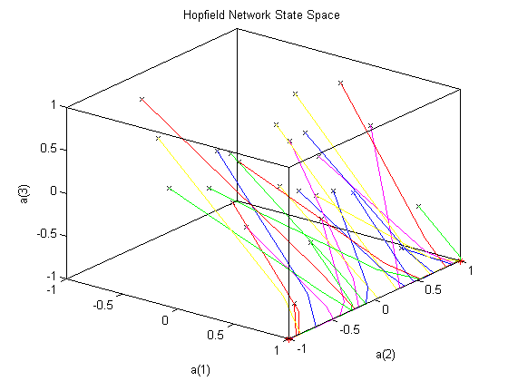

A Three Neuron Hopfield Network
A Hopfield network is designed with target stable points. The behavior of the Hopfield network for different initial conditions is studied.
Copyright 1992-2002 The MathWorks, Inc. $Revision: 1.16 $ $Date: 2002/03/29 19:36:21 $
We would like to obtain a Hopfield network that has the two stable points defined by the two target (column) vectors in T.
T = [+1 +1; ... -1 +1; ... -1 -1];
Here is a plot where the stable points are shown at the corners. All possible states of the 2-neuron Hopfield network are contained within the plots boundaries.
axis([-1 1 -1 1 -1 1]) set(gca,'box','on'); axis manual; hold on; plot3(T(1,:),T(2,:),T(3,:),'r*') title('Hopfield Network State Space') xlabel('a(1)'); ylabel('a(2)'); zlabel('a(3)'); view([37.5 30]);
The function NEWHOP creates Hopfield networks given the stable points T.
net = newhop(T);
Here we define a random starting point and simulate the Hopfield network for 50 steps. It should reach one of its stable points.
a = {rands(3,1)};
[y,Pf,Af] = sim(net,{1 10},{},a);We can make a plot of the Hopfield networks activity.
Sure enough, the network ends up at a designed stable point in the corner.
record = [cell2mat(a) cell2mat(y)]; start = cell2mat(a); hold on plot3(start(1,1),start(2,1),start(3,1),'bx', ... record(1,:),record(2,:),record(3,:))

We repeat the simulation for 25 more randomly generated initial conditions.
color = 'rgbmy'; for i=1:25 a = {rands(3,1)}; [y,Pf,Af] = sim(net,{1 10},{},a); record=[cell2mat(a) cell2mat(y)]; start=cell2mat(a); plot3(start(1,1),start(2,1),start(3,1),'kx', ... record(1,:),record(2,:),record(3,:),color(rem(i,5)+1)) end
Now we simulate the Hopfield for the following initial conditions, each a column vector of P.
These points were exactly between the two target stable points. The result is that they all move into the center of the state space, where an undesired stable point exists.
P = [ 1.0 -1.0 -0.5 1.00 1.00 0.0; ... 0.0 0.0 0.0 0.00 0.00 -0.0; ... -1.0 1.0 0.5 -1.01 -1.00 0.0]; cla plot3(T(1,:),T(2,:),T(3,:),'r*') color = 'rgbmy'; for i=1:6 a = {P(:,i)}; [y,Pf,Af] = sim(net,{1 10},{},a); record=[cell2mat(a) cell2mat(y)]; start=cell2mat(a); plot3(start(1,1),start(2,1),start(3,1),'kx', ... record(1,:),record(2,:),record(3,:),color(rem(i,5)+1)) end